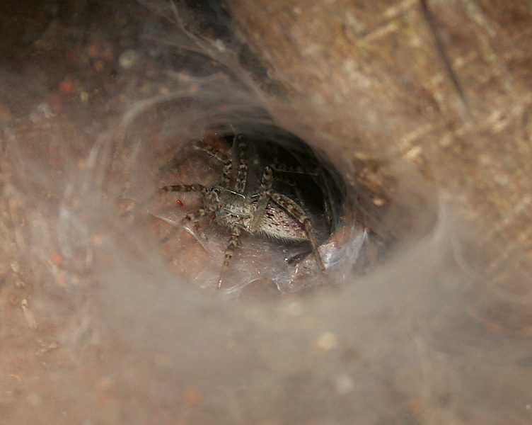

घास की मकड़ीFunnel-web Wolf Spider
Hippasa agelenoides · Lycosidae · SPD-0018

- Scientific name
- Hippasa agelenoides (C.L. Koch, 1847)
- Family
- Lycosidae
- Hindi
- घास की मकड़ी
- Local names
- ghass ki makdi, wolf spider, trap spider
- Status here
- native
- Movement
- Resident, here all year
- IUCN
- not evaluated
- Review
- audited and independently read
When to look कब देखें
Present all year.
Uses and possibilities उपयोग और संभावनाएँ
Drawn from the documented uses in the profile below, where each is labelled traditional, current or a research lead. All uses →
घास की मकड़ी / Funnel-web Wolf Spider
Hippasa agelenoides (C.L. Koch, 1847) — Lycosidae
घास की मकड़ी — यह एक मध्यम आकार की, तेज़-दौड़ने वाली भूरी मकड़ी है जो घास के मैदानों में पाई जाती है। इसे "funnel-web" कहते हैं क्योंकि यह अपने जाले में एक फनल (漏斗) जैसी आकृति बनाती है, जहाँ से शिकार को पकड़ना आसान होता है। इसकी तेज़ नज़रें और तेज़ रफ़्तार इसे एक शिकारी मकड़ी बनाती हैं। यह खेतों और बागों में कीटों को खाकर फसलों की रक्षा करती है। हालाँकि यह काट सकती है, पर यह बहुत आक्रामक नहीं है और आमतौर पर मनुष्य को नुकसान नहीं पहुँचाती।
Quick Identification त्वरित पहचान
| Feature | Description |
|---|---|
| Size | Medium spider; body length 10–15 mm (females larger than males) |
| Colour | Predominantly brown or grey-brown; carapace with darker markings |
| Eyes | Eight eyes arranged in characteristic lycosid pattern; two large posterior median eyes |
| Body shape | Robust, muscular body; long legs relative to body size |
| Legs | Relatively long and powerful; dark brown with banding |
| Abdomen | Tapered, with darker markings and lighter patches; females may be darker |
| Web | Sheet web with a funnel entrance; often located in grass tussocks or low vegetation |
Field tip: Look for a distinctive sheet web in grass tussocks, often with a funnel-shaped entrance where the spider sits. The spider is dark brown, robust, and will dart out rapidly to capture prey. If you see a medium-sized brown spider with large eyes and a flat web in grass, it is likely a Funnel-web Wolf Spider.
हिंदी — कैसे पहचानें: घास में जाला बनाती है, फनल की तरह खुला हुआ। भूरी मकड़ी, तेज़ दौड़ने वाली, बड़ी आँखें।
Morphology आकारिकी
Biometrics:
| Measurement | Range |
|---|---|
| Body length (female) | 12–15 mm |
| Body length (male) | 10–12 mm |
| Leg span (female) | 35–45 mm |
Body structure: The carapace (head region) is brown with darker longitudinal stripes. The eyes are arranged in the typical wolf spider pattern: two large principal eyes in the middle of the anterior end, four smaller lateral eyes, and two posterior median eyes. Chelicerae (fangs) are dark and robust. Pedipalps (male sexual appendages) are well-developed in males. Legs are long, dark brown, with distinct banding and equipped with setae for gripping prey and substrate. The abdomen is tapered and dorsally patterned with lighter and darker areas.
Sexual dimorphism: Females are significantly larger, with a proportionally larger abdomen. Males have more pronounced pedipalps and may be slightly paler.
Behaviour & Ecology व्यवहार और पारिस्थितिकी
A web-building wolf spider (unusual for the family, which are typically active hunters). Hippasa agelenoides constructs a sheet web in grass tussocks, low vegetation, or ground-level structures, with a characteristic funnel-shaped entrance. The spider sits at the entrance or within the funnel and rushes out to capture prey that lands on the web. Unlike pure hunting wolves, this species relies on the web to intercept prey.
The species is diurnal or crepuscular, active during daylight and evening hours. It is solitary and territorial.
हिंदी: जाला बना कर शिकार करती है, लेकिन दौड़ भी बहुत तेज़ है। दिन और शाम को सक्रिय रहती है।
Life Cycle / Phenology जीवन चक्र
| Stage | Event |
|---|---|
| Egg | Laid in a silken cocoon; female guards the egg sac |
| Spiderling | Hatch within cocoon; remain briefly before dispersing |
| Juveniles | Multiple moults (instars); development 2–3 months |
| Adult | Maturity reached; females live ~2–3 years, males ~1 year |
| Reproduction | Peak mating June–October in eastern UP |
Host Plants or Prey आहार
Prey:
- Small insects: flies, small bugs, small wasps
- Tiny spiders and arthropods
- Grass-feeding insects and leaf-hoppers
Predators / Natural Enemies शत्रु
- Parasitoid wasps: Ichneumonid wasps parasitize spiders.
- Predatory insects: Large insects (assassin bugs, robber flies) may attack spiders.
- Vertebrates: Lizards, small birds, and shrews hunt spiders.
Agricultural / Human Relevance कृषि प्रासंगिकता
Natural pest control. Funnel-web Wolf Spiders are valuable in agricultural ecosystems, preying on numerous insects in grasslands, rice paddies, and field margins. They reduce pest populations without chemical intervention. Their presence indicates a healthy, biodiverse grassland ecosystem.
No threat to humans. This spider is non-aggressive. Bites are rare and occur only if the spider is severely provoked. If bitten, the venom is mild and causes only minor local irritation (swelling, slight pain) similar to a mosquito bite, with no systemic effects.
Cultural significance: In many regions of India, spiders are considered beneficial and are preserved around homes for pest control.
हिंदी: किसान का दोस्त है क्योंकि यह कीड़े खाती है। काटती नहीं है, या बहुत कम काटती है। काटने से कोई बीमारी नहीं।
Expected Locally स्थानीय रूप से अपेक्षित
Not a field record. Written from published accounts for eastern Uttar Pradesh. No confirmed local sighting yet — if you have seen it, that is what the atlas needs.
अभी तक स्थानीय पुष्टि नहीं। यह विवरण प्रकाशित स्रोतों से है, किसी अवलोकन से नहीं।
Expected in grasslands and fallow fields throughout Basti district, particularly in areas with low grass cover and minimal pesticide use. The funnel-web nests are conspicuous in grass tussocks and can be found by searching during daylight. A record would be a photograph of the web in its natural setting or the spider itself, with place and date.
Distribution वितरण
Global range: South and Southeast Asia, from India through Myanmar and Thailand.
In India: Widespread in grasslands and cultivated areas throughout the plains.
In Uttar Pradesh: Recorded from multiple districts in agricultural zones.
In Basti district / eastern UP: Expected in all grassland and agricultural habitats.
Research Questions शोध प्रश्न
- How many insects does a single Funnel-web Wolf Spider capture per day in different seasons? / विभिन्न ऋतुओं में एक मकड़ी प्रतिदिन कितने कीड़े पकड़ती है? — Daily observation of captured prey in webs.
- Does the density of Funnel-web Wolf Spiders increase with reduced pesticide use in a rice field? — Compare spider populations in organic and conventional farms.
- What is the prey composition (species and size distribution) of this spider in local grasslands? — Collect webs and examine prey remains.
- How does web placement (height, vegetation type) affect prey capture success? — Measure prey capture rates in webs at different locations.
- Can farmers protect spiders by creating refuge habitat (undisturbed grass margins) in their fields? — Test spider densities at field margins with and without vegetation buffers.
Similar Species मिलती-जुलती प्रजातियाँ
| Species | How to tell apart | हिंदी |
|---|---|---|
| Hippasa greenalliae (Green-legged Wolf Spider) | Similar but larger; legs have greenish tint; slightly different web structure | बड़ी, हरे पैर वाली |
| Other wolf spiders (Lycosida) | Hunting spiders; lack funnel web; larger eyes; active hunters on ground | शिकारी मकड़ियाँ, जाला नहीं बनाती |
Field rule: Medium brown spider with funnel-web in grass, large eyes, rapid movement: Funnel-web Wolf Spider.
Taxonomy & Classification वर्गीकरण
Original description. C.L. Koch described this species as Theridion agelenoides in 1847 in Die Arachniden. Type locality: India. Later transferred to Hippasa. The genus name Hippasa is from Greek, possibly derived from a mythological reference. The species name agelenoides refers to resemblance to Agelenidae (true funnel-web spiders), though Hippasa belongs to Lycosidae.
Subspecies. Monotypic.
Family and order placement. Order Araneae, family Lycosidae (wolf spiders), genus Hippasa.
Phylogenetic notes. Hippasa represents a clade of web-building wolf spiders, unusual within the primarily hunting-based family Lycosidae.
IUCN status rationale. Not evaluated. Abundant and resilient.
Photo Gallery फोटो गैलरी
Photos needed आवश्यक फोटो
- [ ] Funnel web in grass showing entrance funnel (जाला)
- [ ] Spider at web entrance or in grass (मकड़ी)
- [ ] Spider with captured prey (शिकार के साथ)
No photos yet — add field photos to media/species/funnel_web_wolf_spider/ and run node scripts/sync_photos.js.
References संदर्भ
- Koch, C.L. (1847). Die Arachniden. Band 14, p. 40. Nürnberg. [original description as Theridion agelenoides]
- Tikader, B.K. (1970). Spider Fauna of Sikkim. Records of the Zoological Survey of India 64: 1–83.
- World Spider Catalog (2024). Hippasa agelenoides. Natural History Museum Bern. Version 25.0.
- Nentwig, W., Bocher, K., Boyle, B., Bretfeld, G.,Counterman, B., ... & Krell, F.T. (2023). World Spider Catalog. Natural History Museum Bern. Online at wsc.nmbe.ch.
- Sebastian, P.A. & Sheriff, M.A. (2009). Spiders of India. Universities Press, Hyderabad.
- GBIF Occurrence Data — Hippasa agelenoides, Uttar Pradesh (2010–2025).
Source file: species/fauna/spiders/funnel_web_wolf_spider.md